Node information
Test timing information
Up ramp statistics
Runtime session statistics
Down ramp statistics
Overall statistics
CPU usage graphs
Processes usage graphs
Memory usage graph
Disk usage graphs
Network usage graphs
| Test start | 2014-11-26 6:38:34 |
| Up ramp start | 2014-11-26 6:38:41 |
| Runtime session start | 2014-11-26 6:38:56 |
| Down ramp start | 2014-11-26 6:40:26 |
| Test end | 2014-11-26 6:41:21 |
| Up ramp length | 15 seconds 1 millisecond (requested 15000 ms) |
| Runtime session length | 1 minute 30 seconds 0 millisecond (requested 90000 ms) |
| Down ramp length | 15 seconds 1 millisecond (requested 15000 ms) |
| Total test length | 2 minutes 47 seconds 669 milliseconds |
| State name | % of total | Count | Errors | Minimum Time | Maximum Time | Average Time |
|---|---|---|---|---|---|---|
StoriesOfTheDay | 31 % | 1373 | 0 | 4 ms | 1848 ms | 327 ms
|
Register | 1 % | 50 | 0 | 1 ms | 4 ms | 1 ms
|
RegisterUser | 0 % | 34 | 0 | 24 ms | 147 ms | 25 ms
|
Browse | 4 % | 188 | 0 | 1 ms | 1018 ms | 7 ms
|
BrowseCategories | 1 % | 57 | 0 | 4 ms | 9 ms | 3 ms
|
BrowseStoriesInCategory | 0 % | 35 | 0 | 21 ms | 69 ms | 10 ms
|
OlderStories | 1 % | 74 | 0 | 4 ms | 27 ms | 8 ms
|
ViewStory | 20 % | 889 | 0 | 3 ms | 1074 ms | 25 ms
|
PostComment | 5 % | 229 | 0 | 2 ms | 9 ms | 1 ms
|
StoreComment | 3 % | 142 | 0 | 20 ms | 335 ms | 29 ms
|
ViewComment | 8 % | 381 | 0 | 4 ms | 60 ms | 7 ms
|
ModerateComment | 0 % | 31 | 0 | 5 ms | 13 ms | 5 ms
|
StoreModerateLog | 0 % | 9 | 0 | 31 ms | 126 ms | 47 ms
|
SubmitStory | 2 % | 99 | 0 | 3 ms | 84 ms | 4 ms
|
StoreStory | 1 % | 53 | 0 | 19 ms | 344 ms | 35 ms
|
Search | 3 % | 153 | 0 | 2 ms | 1068 ms | 29 ms
|
SearchInStories | 1 % | 77 | 0 | 5 ms | 22 ms | 4 ms
|
SearchInComments | 0 % | 35 | 0 | 6 ms | 59 ms | 16 ms
|
SearchInUsers | 0 % | 12 | 0 | 7 ms | 19 ms | 7 ms
|
Author (login) | 0 % | 19 | 0 | 2 ms | 3 ms | 1 ms
|
Author (task) | 0 % | 11 | 0 | 4 ms | 7 ms | 3 ms
|
ReviewStories | 0 % | 7 | 0 | 12 ms | 17 ms | 14 ms
|
AcceptStory | 0 % | 2 | 0 | 55 ms | 55 ms | 27 ms
|
RejectStory | 0 % | 2 | 0 | 28 ms | 28 ms | 14 ms
|
Back probability | 3 % | 131 | 0 | 0 ms | 0 ms | 0 ms
|
End of Session | 5 % | 246 | 0 | 0 ms | 0 ms | 0 ms
|
Total | 100 % | 4339 | 0 | - | - | 113 ms
|
Average throughput | 289 req/s
| |||||
Completed sessions | 185
| |||||
Total time | 1268 seconds
| |||||
Average session time | 6 seconds
| |||||
| State name | % of total | Count | Errors | Minimum Time | Maximum Time | Average Time |
|---|---|---|---|---|---|---|
StoriesOfTheDay | 16 % | 2291 | 0 | 5 ms | 195 ms | 12 ms
|
Register | 1 % | 150 | 0 | 1 ms | 25 ms | 2 ms
|
RegisterUser | 1 % | 152 | 0 | 22 ms | 311 ms | 59 ms
|
Browse | 5 % | 722 | 0 | 1 ms | 197 ms | 2 ms
|
BrowseCategories | 2 % | 289 | 0 | 3 ms | 32 ms | 5 ms
|
BrowseStoriesInCategory | 3 % | 441 | 0 | 14 ms | 344 ms | 28 ms
|
OlderStories | 3 % | 487 | 0 | 3 ms | 382 ms | 13 ms
|
ViewStory | 16 % | 2256 | 0 | 4 ms | 465 ms | 17 ms
|
PostComment | 6 % | 877 | 0 | 1 ms | 46 ms | 2 ms
|
StoreComment | 6 % | 882 | 0 | 20 ms | 466 ms | 95 ms
|
ViewComment | 10 % | 1484 | 0 | 4 ms | 404 ms | 22 ms
|
ModerateComment | 0 % | 64 | 0 | 4 ms | 16 ms | 7 ms
|
StoreModerateLog | 0 % | 57 | 0 | 22 ms | 477 ms | 112 ms
|
SubmitStory | 3 % | 426 | 0 | 3 ms | 36 ms | 5 ms
|
StoreStory | 2 % | 368 | 0 | 18 ms | 327 ms | 56 ms
|
Search | 3 % | 557 | 0 | 1 ms | 76 ms | 2 ms
|
SearchInStories | 3 % | 442 | 0 | 3 ms | 249 ms | 9 ms
|
SearchInComments | 1 % | 219 | 0 | 5 ms | 482 ms | 32 ms
|
SearchInUsers | 0 % | 82 | 0 | 5 ms | 147 ms | 11 ms
|
Author (login) | 0 % | 68 | 0 | 1 ms | 35 ms | 2 ms
|
Author (task) | 0 % | 69 | 0 | 2 ms | 9 ms | 4 ms
|
ReviewStories | 0 % | 67 | 0 | 9 ms | 26 ms | 14 ms
|
AcceptStory | 0 % | 42 | 2 | 4 ms | 313 ms | 107 ms
|
RejectStory | 0 % | 18 | 3 | 4 ms | 135 ms | 53 ms
|
Back probability | 4 % | 653 | 0 | 0 ms | 0 ms | 0 ms
|
End of Session | 6 % | 894 | 0 | 0 ms | 0 ms | 0 ms
|
Total | 100 % | 14057 | 5 | - | - | 19 ms
|
Average throughput | 156 req/s
| |||||
Completed sessions | 896
| |||||
Total time | 38721 seconds
| |||||
Average session time | 43 seconds
| |||||
| State name | % of total | Count | Errors | Minimum Time | Maximum Time | Average Time |
|---|---|---|---|---|---|---|
StoriesOfTheDay | 15 % | 364 | 0 | 6 ms | 42 ms | 11 ms
|
Register | 1 % | 31 | 0 | 1 ms | 3 ms | 1 ms
|
RegisterUser | 1 % | 30 | 1 | 5 ms | 132 ms | 52 ms
|
Browse | 5 % | 120 | 0 | 1 ms | 35 ms | 2 ms
|
BrowseCategories | 1 % | 47 | 0 | 3 ms | 14 ms | 5 ms
|
BrowseStoriesInCategory | 3 % | 88 | 0 | 17 ms | 45 ms | 28 ms
|
OlderStories | 2 % | 66 | 0 | 4 ms | 35 ms | 17 ms
|
ViewStory | 15 % | 372 | 0 | 4 ms | 380 ms | 20 ms
|
PostComment | 6 % | 159 | 0 | 1 ms | 19 ms | 2 ms
|
StoreComment | 6 % | 149 | 0 | 23 ms | 338 ms | 84 ms
|
ViewComment | 10 % | 246 | 0 | 5 ms | 148 ms | 19 ms
|
ModerateComment | 0 % | 13 | 0 | 4 ms | 23 ms | 8 ms
|
StoreModerateLog | 0 % | 16 | 0 | 26 ms | 234 ms | 85 ms
|
SubmitStory | 3 % | 71 | 0 | 2 ms | 10 ms | 4 ms
|
StoreStory | 2 % | 61 | 0 | 20 ms | 282 ms | 58 ms
|
Search | 3 % | 91 | 0 | 1 ms | 42 ms | 3 ms
|
SearchInStories | 2 % | 66 | 0 | 4 ms | 39 ms | 10 ms
|
SearchInComments | 2 % | 54 | 0 | 6 ms | 87 ms | 23 ms
|
SearchInUsers | 0 % | 14 | 0 | 4 ms | 23 ms | 11 ms
|
Author (login) | 0 % | 6 | 0 | 1 ms | 2 ms | 2 ms
|
Author (task) | 0 % | 8 | 0 | 4 ms | 5 ms | 4 ms
|
ReviewStories | 0 % | 8 | 0 | 10 ms | 22 ms | 29 ms
|
AcceptStory | 0 % | 8 | 0 | 43 ms | 97 ms | 56 ms
|
RejectStory | 0 % | 5 | 0 | 21 ms | 232 ms | 86 ms
|
Back probability | 5 % | 130 | 0 | 0 ms | 0 ms | 0 ms
|
End of Session | 5 % | 133 | 0 | 0 ms | 0 ms | 0 ms
|
Total | 100 % | 2356 | 1 | - | - | 18 ms
|
Average throughput | 157 req/s
| |||||
Completed sessions | 128
| |||||
Total time | 8857 seconds
| |||||
Average session time | 69 seconds
| |||||
| State name | % of total | Count | Errors | Minimum Time | Maximum Time | Average Time |
|---|---|---|---|---|---|---|
StoriesOfTheDay | 19 % | 4028 | 0 | 4 ms | 1848 ms | 119 ms
|
Register | 1 % | 231 | 0 | 1 ms | 25 ms | 2 ms
|
RegisterUser | 1 % | 216 | 1 | 5 ms | 311 ms | 53 ms
|
Browse | 4 % | 1030 | 0 | 1 ms | 1018 ms | 3 ms
|
BrowseCategories | 1 % | 393 | 0 | 3 ms | 32 ms | 5 ms
|
BrowseStoriesInCategory | 2 % | 564 | 0 | 14 ms | 344 ms | 27 ms
|
OlderStories | 3 % | 627 | 0 | 3 ms | 382 ms | 13 ms
|
ViewStory | 16 % | 3517 | 0 | 3 ms | 1074 ms | 19 ms
|
PostComment | 6 % | 1265 | 0 | 1 ms | 46 ms | 2 ms
|
StoreComment | 5 % | 1173 | 0 | 20 ms | 466 ms | 85 ms
|
ViewComment | 10 % | 2111 | 0 | 4 ms | 404 ms | 19 ms
|
ModerateComment | 0 % | 108 | 0 | 4 ms | 23 ms | 6 ms
|
StoreModerateLog | 0 % | 82 | 0 | 22 ms | 477 ms | 100 ms
|
SubmitStory | 2 % | 596 | 0 | 2 ms | 84 ms | 5 ms
|
StoreStory | 2 % | 482 | 0 | 18 ms | 344 ms | 54 ms
|
Search | 3 % | 801 | 0 | 1 ms | 1068 ms | 7 ms
|
SearchInStories | 2 % | 585 | 0 | 3 ms | 249 ms | 8 ms
|
SearchInComments | 1 % | 308 | 0 | 5 ms | 482 ms | 29 ms
|
SearchInUsers | 0 % | 108 | 0 | 4 ms | 147 ms | 11 ms
|
Author (login) | 0 % | 93 | 0 | 1 ms | 35 ms | 2 ms
|
Author (task) | 0 % | 88 | 0 | 2 ms | 9 ms | 4 ms
|
ReviewStories | 0 % | 82 | 0 | 9 ms | 26 ms | 15 ms
|
AcceptStory | 0 % | 52 | 2 | 4 ms | 313 ms | 95 ms
|
RejectStory | 0 % | 25 | 3 | 4 ms | 232 ms | 57 ms
|
Back probability | 4 % | 914 | 0 | 0 ms | 0 ms | 0 ms
|
End of Session | 6 % | 1273 | 0 | 0 ms | 0 ms | 0 ms
|
Total | 100 % | 20752 | 6 | - | - | 38 ms
|
Average throughput | 172 req/s
| |||||
Completed sessions | 1273
| |||||
Total time | 53626 seconds
| |||||
Average session time | 42 seconds
| |||||
An error occured while waiting for remote processes termination (process hasn't exited)
test#####1
test#####2
test#####3
Command is: /usr/bin/rsh -x localhost /bin/bash -c 'LANG=en_GB.UTF-8 /usr/local/bin/sar -n DEV -n SOCK -rubcw 1 125 -f /home/ubuntu/RUBBoS/bench/2014-11-26@6:38:34/web_server.bin > /home/ubuntu/RUBBoS/bench/2014-11-26@6:38:34/web_server'
Command is: /usr/bin/rsh -x localhost /bin/bash -c 'LANG=en_GB.UTF-8 /usr/local/bin/sar -n DEV -n SOCK -rubcw 1 125 -f /home/ubuntu/RUBBoS/bench/2014-11-26@6:38:34/db_server.bin > /home/ubuntu/RUBBoS/bench/2014-11-26@6:38:34/db_server'
Command is: /usr/bin/rsh -x localhost /bin/bash -c 'LANG=en_GB.UTF-8 /usr/local/bin/sar -n DEV -n SOCK -rubcw 1 125 -f /home/ubuntu/RUBBoS/bench/2014-11-26@6:38:34/client0.bin > /home/ubuntu/RUBBoS/bench/2014-11-26@6:38:34/client0'
Command is: /usr/bin/rsh -x localhost /bin/bash -c 'LANG=en_GB.UTF-8 /usr/local/bin/sar -n DEV -n SOCK -rubcw 1 125 -f /home/ubuntu/RUBBoS/bench/2014-11-26@6:38:34/client1.bin > /home/ubuntu/RUBBoS/bench/2014-11-26@6:38:34/client1'
hantest
/home/ubuntu/RUBBoS/bench/2014-11-26@6:38:34/
gif
2
Generating data files ... '/home/ubuntu/RUBBoS/bench/2014-11-26@6:38:34/db_server' done.
Generating data files ... '/home/ubuntu/RUBBoS/bench/2014-11-26@6:38:34/web_server' done.
Generating data files ... '/home/ubuntu/RUBBoS/bench/2014-11-26@6:38:34/client0' done.
Generating data files ... '/home/ubuntu/RUBBoS/bench/2014-11-26@6:38:34/client1' done.
Generating servers CPU idle time graph
Generating servers CPU busy time graph
Generating servers CPU user/system time graph
Generating servers Processes/second graph
Generating servers Context switches/second graph
Generating servers Disk total transfers graph
Generating servers disk read/write requests graph
Generating servers disk blocks read/write requests graph
Generating servers Memory usage graph
Generating servers Memory & cache usage graph
Generating servers network received/transmitted packets graph
Generating servers network received/transmitted bytes graph
Generating servers Sockets usage graph
Generating clients CPU idle time graph
Generating clients CPU busy time graph
Generating clients CPU user/system time graph
Generating clients Processes/second graph
Generating clients Context switches/second graph
Generating clients Disk total transfers graph
Generating clients disk read/write requests graph
Generating clients disk blocks read/write requests graph
Generating clients Memory usage graph
Generating clients Memory & cache usage graph
Generating clients network received/transmitted packets graph
Generating clients network received/transmitted bytes graph
Generating clients Sockets usage graph
Erasing temporary files ...
| 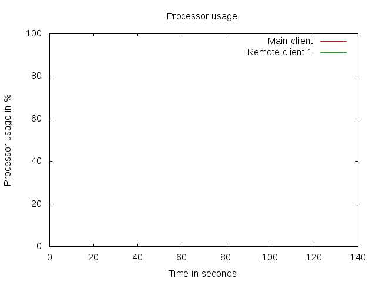 |
|
|
| 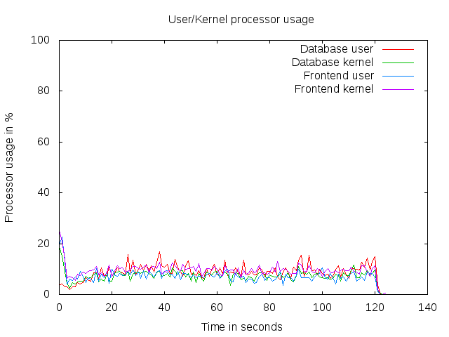 | 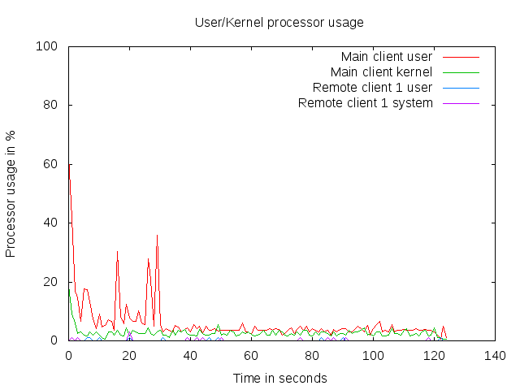 |
| 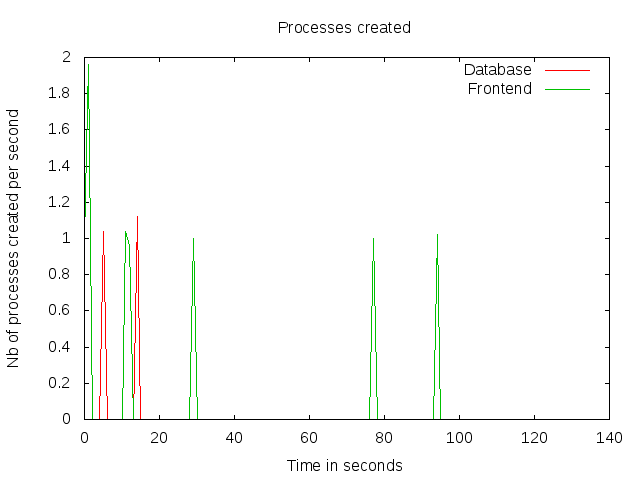 | 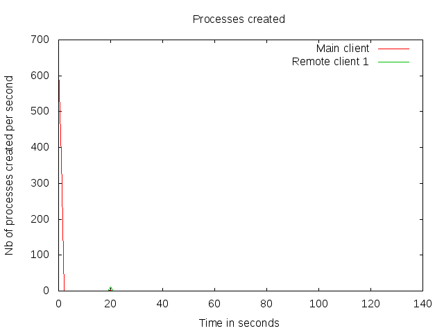 |
| 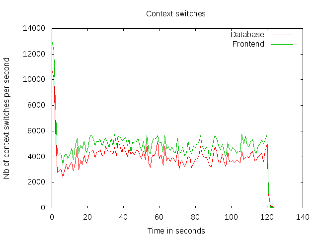 | 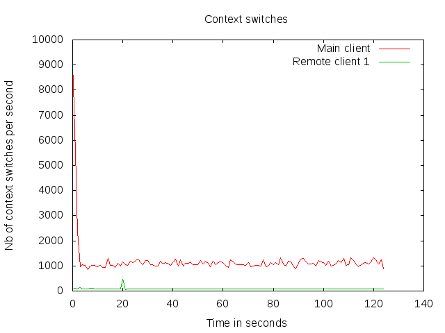 |
| 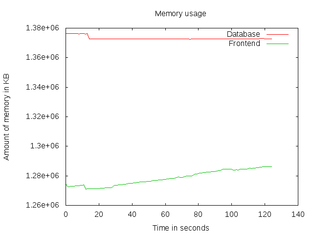 | 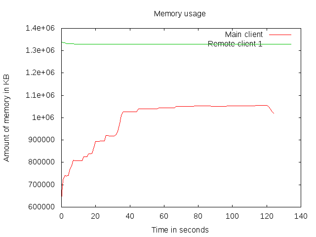 |
| 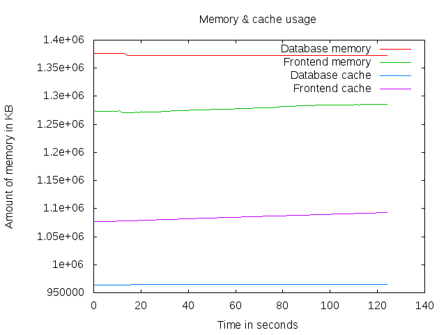 | 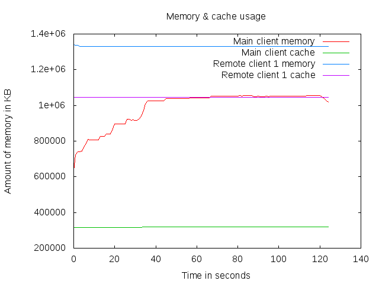 |
| 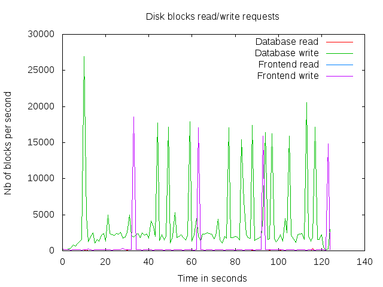 | 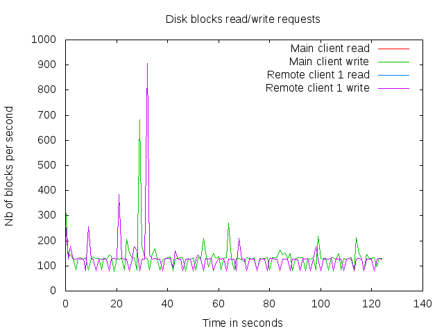 |
| 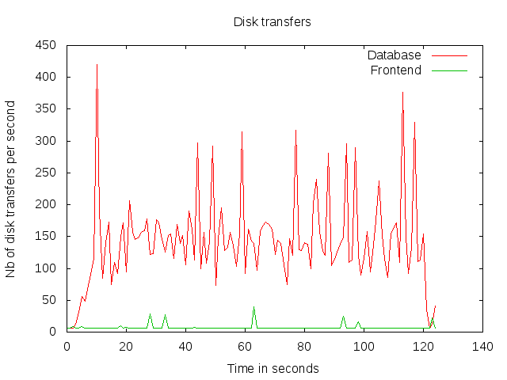 | 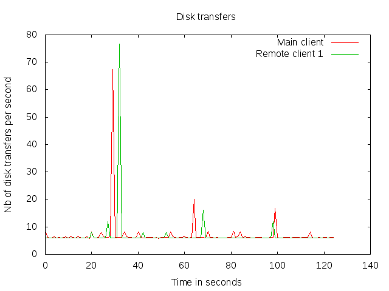 |
| 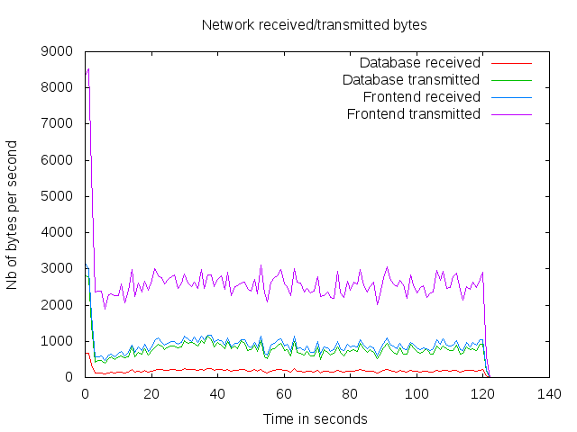 | 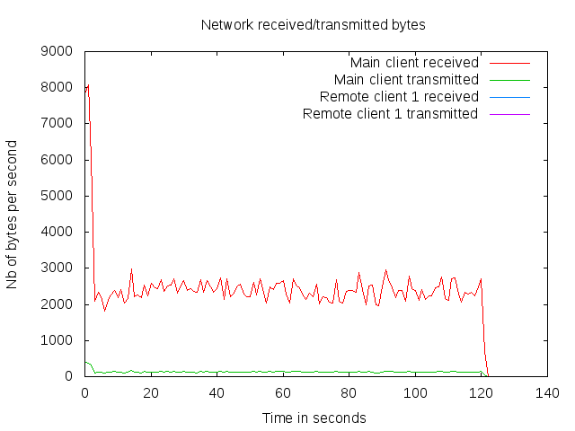 |
| 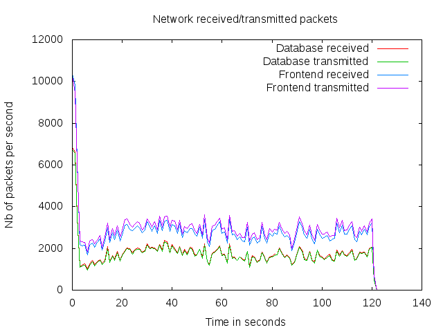 | 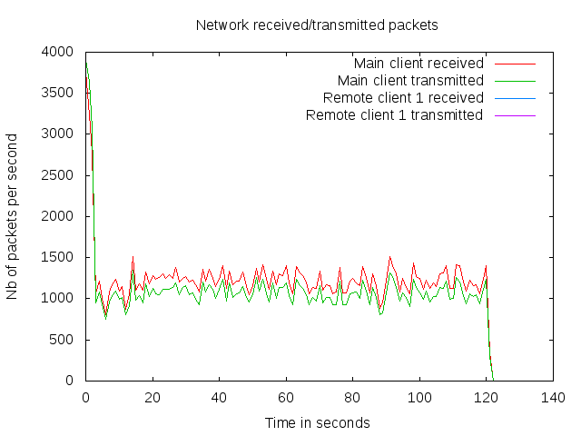 |
| 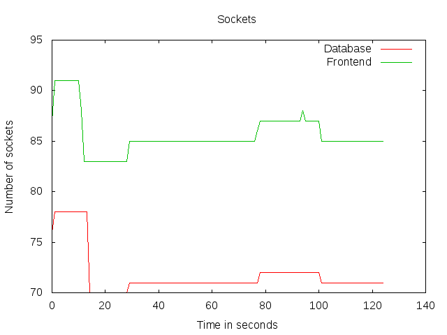 | 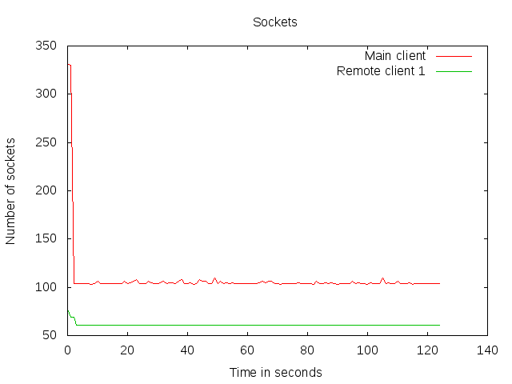 |